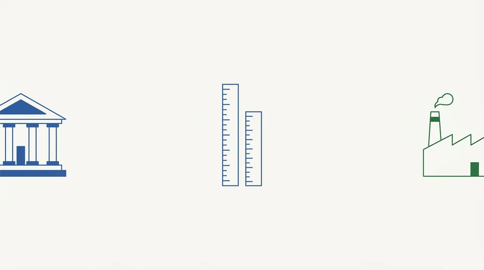

トップ ＞ 読みもの ＞ 銀行の高配当株が、このサイトで判定できない理由
銀行の高配当株が、このサイトで判定できない理由
公開 数字は 2026-09-04 時点

本サイトでは、銀行・証券・保険などの金融業を 「判定対象外」として扱っています。一覧からは消していませんが、 10項目による合否は出していません。
理由は「金融業が悪いから」ではありません。同じ物差しで測れないからです。
数字で見ると、はっきりします
本サイトの項目8は「自己資本比率が50%以上」です。 2026-09-04 時点で実際の数字を並べると、こうなります。
4.9%
銀行業
79社
6.7%
金融業ぜんぶ
164社
56.9%
一般の事業会社
3,371社
| 区分 | 社数 | 自己資本比率の中央値 |
|---|---|---|
| 銀行業 | 79社 | 4.9% |
| 金融業ぜんぶ | 164社 | 6.7% |
| 一般の事業会社 | 3,371社 | 56.9% |
銀行の自己資本比率は、一般の事業会社と桁がひとつ違います。 これは経営が悪いのではなく、預金を預かって貸し出すという商売の形そのものです。 銀行にとって預金は負債にあたるため、資産に対する自己資本の割合は小さくなります。
ここに「50%以上」という基準を当てると、経営の良し悪しに関わらず すべての銀行が落ちます。それは判定として意味がありません。
ほかにも合わない項目があります
- 流動比率 … 銀行の「1年以内に返すお金」は預金です。 一般の会社と同じ意味になりません
- 営業利益率 … 売上高にあたるものの定義が違います
- 現金等／総資産 … 銀行にとっての現金は在庫のようなもので、多い少ないの意味が違います
では、どう見ればよいか
本サイトは判定を出しませんが、各指標の実測値は表示しています。 銀行株を見るときは、一般の事業会社と比べるのではなく、 銀行どうしで比べるのが基本になります。
また、銀行には自己資本比率規制（BIS規制）という別の物差しがあります。 そちらは本サイトでは扱っていません。
本サイトは情報提供のみを目的としており、投資勧誘・投資助言ではありません。投資判断はご自身の責任でお願いします。